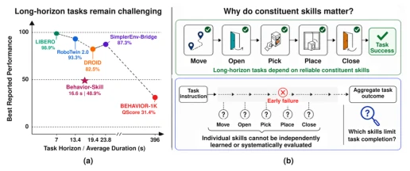
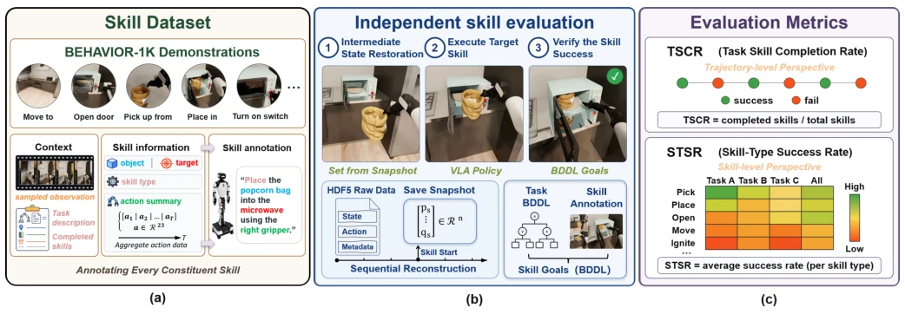
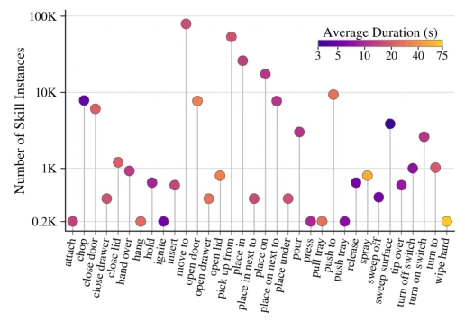
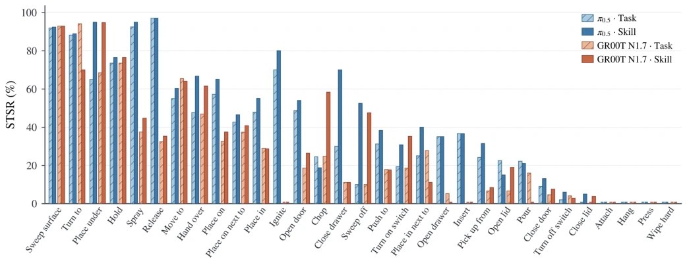
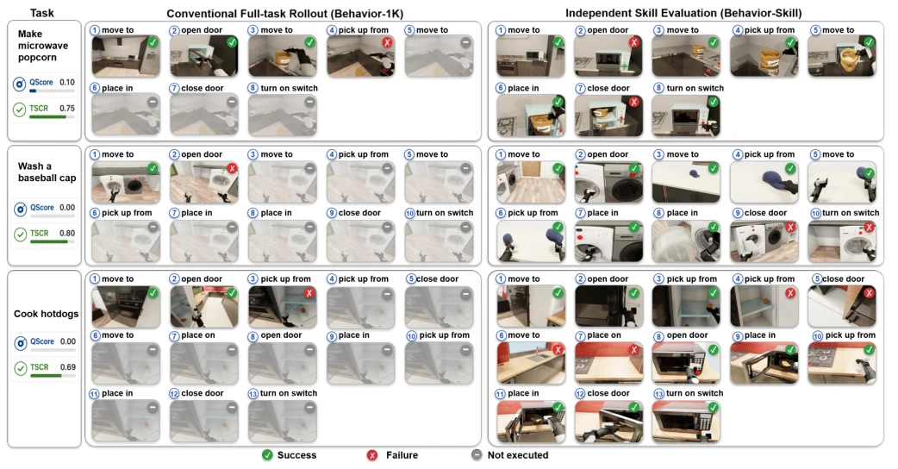
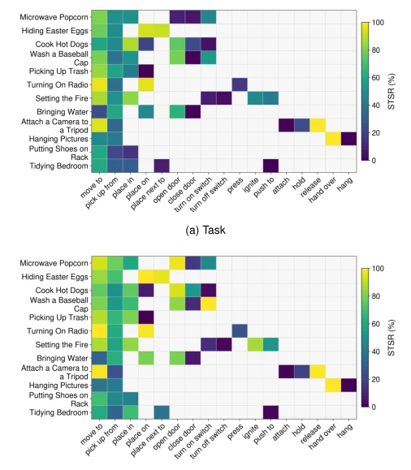

This paper casts a cold shower over the evaluation of long-horizon VLA. Existing task-level metrics (such as BEHAVIOR-1K) are like only caring whether the marathon is completed, regardless of whether the runner stumbled ten times midway. Behavior-Skill forcibly decomposes tasks into skills; although the data volume is staggering (230,000 instances), it essentially remains within simulation and fails to cover planning and sequence dependencies. Most ironically, even with such fine granularity, the skill success rates of mainstream models π0.5 and GR00T remain below 50%, indicating that "contact-rich" operations are the real hard nuts to crack. This work is like opening a side window for a black box; although it does not solve the core problem, it at least reveals where the black box leaks. If future work can combine planning and sequence dependencies, it might truly promote the development of long-horizon tasks; otherwise, it is merely attaching a finer label to existing models, and the improvement in robustness for actual deployment remains doubtful.
Long-horizon mobile manipulation tasks require robots to continuously execute multiple skills, but existing benchmarks [8][12][16] mainly rely on task-level rollout and aggregate metrics. This leads to intermediate failures being difficult to observe: once an early skill fails, subsequent skills are not executed at all, and task-level metrics cannot reflect the true capability distribution. For example, BEHAVIOR-1K [12] only provides task-level annotations and cannot independently evaluate constituent skills. As task horizons grow, early failures mask the performance of subsequent skills, making it impossible to locate bottlenecks. We need a framework capable of independently evaluating skills, retaining context, and quantifying skill-type capabilities, rather than merely checking task completion. Existing work mostly treats skills as planning abstractions, lacking a unified learning and evaluation framework, which results in a lack of fine-grained feedback when improving strategies, making it difficult to target the optimization of execution reliability for specific skill categories.

Fig. 1. Challenges of long-horizon mobile manipulation tasks. (a) Perfor- mance on representative embodied benchmarks with increasing task horizon, measured by average task duration. The Behavior-Skill result denotes the overall skill success rate in our evaluation, while the other results use their respective benchmark metrics. (b) Long-horizon tasks require reliable execution of multiple constituent skills.
The overall process is divided into dataset construction, independent evaluation framework, and metric definition. First, based on 10,000 demonstrations from BEHAVIOR-1K [12], tasks are decomposed into 235,492 skill instances, with multimodal annotations (text + visual sampling + action summary) generated via Qwen3-VL, ensuring each skill has clear context and action evidence. Second, independent evaluation units are constructed, containing intermediate state recovery (rebuilding simulator state via trajectory replay to solve the dormant object problem), skill success conditions (BDDL symbolic goals, some requiring extended predicates such as grasp relations), and evaluation horizon. Finally, TSCR (Task Skill Completion Rate) and STSR (Skill Type Success Rate) metrics are proposed to quantify strategy capabilities from trajectory and semantic category perspectives respectively, ensuring skills execute independently under preconditions. State recovery is achieved by replaying physics engine events, ensuring scene consistency, so that skill evaluation is unaffected by prior task failures and truly reflects the strategy's underlying capabilities.

Fig. 2. Overview of Behavior-Skill. (a) Skill Dataset: we annotate each constituent skill from BEHAVIOR-1K demonstrations with multimodal context and action summaries. (b) Independent skill evaluation: each skill is executed from a restored intermediate state and verified against a skill-specific BDDL goal. (c) Evaluation metrics: TSCR summarizes skill completion at the trajectory level, while STSR captures performance across skill types.

Fig. 3. Distribution of skill instances in Behavior-Skill. The number of instances is shown for each semantic skill category, while marker color indicates the corresponding average execution duration.
实验Experiments
在 50 任务基准上测试 π0.5 和 GR00T N1.7。结果显示 TSCR 仅约 48.4% 和 42.5%，技能训练提升有限，说明技能执行仍是主要瓶颈。STSR 表明失败集中在接触丰富技能（如 Open Lid, Pour），而非均匀分布，揭示了特定技能类型的共性难点。对比全任务评估发现，传统方法会因早期失败忽略后续技能，掩盖真实能力（如 Make Microwave Popcorn 任务中部分技能未执行），导致任务级指标虚高或失真。任务依赖分析显示同一技能在不同任务中成功率差异大，证明场景上下文影响显著。这表明单纯增加数据或微调难以突破瓶颈，需针对特定技能类型优化，且仿真环境下的评估结果需验证真实世界迁移性。
π0.5 and GR00T N1.7 were tested on a 50-task benchmark. Results show TSCR is only about 48.4% and 42.5% respectively; skill training improvements are limited, indicating that skill execution remains the primary bottleneck. STSR indicates failures are concentrated in contact-rich skills (e.g., Open Lid, Pour), rather than being uniformly distributed, revealing common difficulties for specific skill types. Comparing full task evaluations reveals that traditional methods ignore subsequent skills due to early failures, masking true capabilities (e.g., some skills not executed in the Make Microwave Popcorn task), leading to inflated or distorted task-level metrics. Task dependency analysis shows significant differences in success rates for the same skill across different tasks, proving that scene context has a significant impact. This indicates that simply increasing data or fine-tuning makes it difficult to break through the bottleneck; optimization must target specific skill types, and evaluation results in simulation environments require verification of real-world transferability.

Fig. 4. Capability profiles (STSR, %) of π0.5 and GR00T N1.7 across semantic skill categories under Task and Skill settings on the complete 50-task benchmark.

Fig. 5. Comparison of conventional full-task evaluation and Behavior-Skill on representative long-horizon tasks. Green, red, and gray markers indicate successful, failed, and unexecuted constituent skills, respectively.

Fig. 6. Task-wise Skill-Type Success Rate (STSR) on the representative 12- task subset under (a) the Task setting and (b) the Skill setting. Color indicates STSR (%), and blank cells denote skill types absent from the corresponding task.